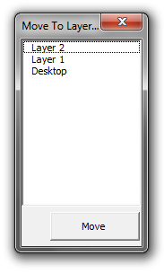

Предлагаю создать новый макрос!
Des425 / 03.09.2009, 17:41/00:41
Форум:
Предлагаю создать новый макрос! Самому не получаеться!
Предназначения макроса:
1. Определить все слои в документе (1-я страница + Мастер слой).
2. Возможность указать слой на который будет переноситься объект (главное чтобы
запоминался указанный слой) .
3. Кнопка «Start» Чтобы начать действие. :)
4. Чтобы окошко макроса не сворачивалась (если его не закрывать).
Для чего это нужно:
Например: у нас куча объектов, нам нужно распределить все по слоям (Ctrl+C, Ctrl+V или перетаскивать объекты в Object Manager, мучительно)
Типо переместить выделенное на заданный слой?
Да!
ну проставляйся и напишу :D
O_O :D
А для чего? для следующего запуска? можно подробнее...
А по фейсу можно так например:

Да для следующего запуска!
Чтобы он работал, даже если его не используешь!
Если я выберу следующий объект, чтобы он сразу перемещался на тот слой,
который был выбран или на новый слой, который будет указан!
Sancho, спасибо за макрос!